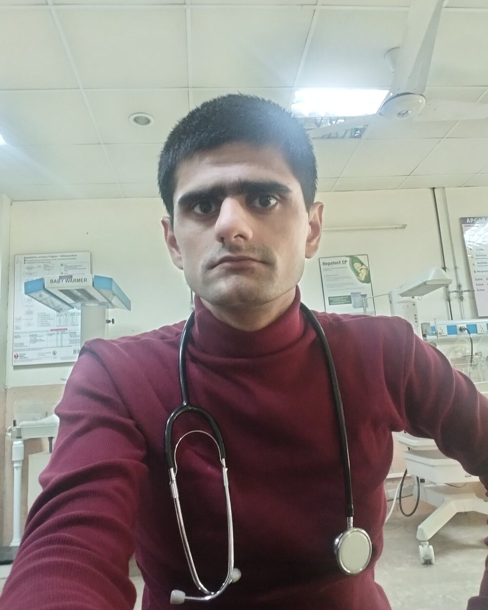

01 / Research systems
Medical Navigator Bot
A structured research assistant for navigating evidence, organizing academic workflows, and delivering useful medical information.
Lahore, Pakistan
I’m Usman Arshad, a doctor, anatomy scholar, and developer building clearer ways to teach, research, and work in medicine.

MBBS graduate
Master’s in Anatomy
Perspective
I work where clinical insight, academic rigor, and practical software meet.
My academic foundation is medicine and anatomy. My technical practice spans Android development, web systems, automation scripts, and AI-assisted research tools.
The goal is simple: reduce friction, make knowledge easier to navigate, and build tools that fit the realities of Pakistani doctors and medical students.
Selected work
01 / Research systems
A structured research assistant for navigating evidence, organizing academic workflows, and delivering useful medical information.
02 / Learning tools
Focused mobile learning resources designed for students, published for Google Play and Amazon Appstore audiences.
03 / Access
An automation utility that makes archival content access and download workflows more efficient.
04 / Research infrastructure
A hands-free research pipeline with structured folders, timestamps, logs, reproducible records, command-line methods, and accessible GUI workflows.
Research & experience
Now
University of Health Sciences, Lahore
Study
Investigating local disease incidence and clinical relevance.
Study
Exploring symptom burden and patterns across the population.
1 year
Mohiuddin Islamic Medical College
Clinical
Experience in pediatrics, anesthesia, and general medical practice.
Tools I work with
Open to meaningful collaborations